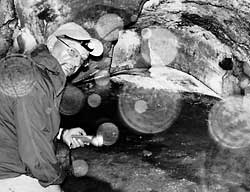
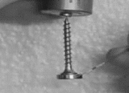

IYPT 2009 Problems
Problems for the 22nd IYPT 2009
1. Stearin engine
A candle is balanced on a horizontal needle placed through it near its centre of mass. When the candle is lit at both ends, it may start to oscillate. Investigate the phenomenon. Maximize the output mechanical power of the system.
2. Coupled compasses
Place a compass on a table. Place a similar compass next to the first one and shake it gently to make the needle start oscillating. The original compass’ needle will start oscillating. Observe and explain the behaviour of these coupled oscillators.
3. Resonating modes
Place a mobile phone inside a metallic container with a hole in it. Investigate under what conditions the mobile phone starts to ring after calling it.
4. Ghostly images
When a photo is taken with a flash, bright “disks” may appear as shown in the picture. Investigate and explain the phenomenon.

5. Stop a drip
To prevent dripping from a bottle after pouring, it can be turned slightly. Investigate the motion of the bottle for no drop to fall.
6. Roundabout
Put a plastic cup on a thin layer of liquid on a flat solid surface. Make the cup rotate. On what parameters does the rotational deceleration of the cup depend?
7. Skateboarder
A skateboarder on a horizontal surface can accelerate from rest just by moving the body, without touching external support. Investigate the parameters that affect the motion of a skateboard propelled by this method.
8. Air pocket
A vertical air jet from a straw produces a cavity on a water surface. What parameters determine the volume and depth of the cavity?
9. Drying
Investigate the drying process of a vertical wet paper sheet. How does the boundary of drying move?
10. Optical tube
Look down a cylindrical metal tube which is shiny on the inside. You will notice dark and light bands. Investigate the phenomenon.
11. Transformers
The “simple transformer law” relates output voltage to input voltage and turns ratio. Investigate the importance of frequency and other parameters in determining the non-ideal behaviour of transformers.
12. Hot ball
Put a hot metal ball on parallel horizontal rails. The ball starts to move. Investigate the phenomenon.
13. Sand ripples
Investigate how the formation of sand ripples under shallow water depends on various parameters.
14. Bouncing drop
Investigate the motion of water droplets falling on a hydrophobic surface (e.g. coated with soot or teflon).
15. Electro-oscillator
A mass is hung from the middle of a horizontal wire. When a current is passed through the wire, the mass may start to oscillate. Describe and explain this phenomenon.
16. Electromagnetic motor
Attach a strong light magnet to the head of a steel screw. The screw can now hang from the terminal of a battery. Completing the circuit by a sliding contact on the magnet causes the screw to rotate. Investigate the parameters that determine the angular velocity of the screw.

17. Corrugation
After traffic has used an unpaved road for some time the surface of the road gets a “wave” structure with a well defined wavelength. Investigate and explain this phenomenon.